My Design & Development Process
I applied a systematic approach combining user research, iterative design, and technical implementation to deliver the final website. The process included:
1 - Research & Discovery
To design a premium digital experience for Golf Space, I began by understanding both the market and the users. I conducted competitive benchmarking across 15+ high-end golf club websites to identify industry patterns, common user expectations, and functional standards. At the same time, desk and online research helped uncover emerging trends and digital behaviors, while client-facing discovery clarified business goals and operational priorities. These insights were synthesized into three distinct personas, each representing a primary audience segment.
User Personas & Journey Mapping
Goal: Quickly assess whether a premium membership delivers sufficient value
Michael is drawn to clear, efficient information and wants to understand the club's offerings and value at a glance.
Goal: Explore golf as a social and lifestyle experience
Sarah seeks inspiration and guidance, looking for accessible information, engaging visuals, and flexible membership options.
Goal: Find a reliable, accessible, and community-oriented golf club for long-term participation
Robert values trust, clarity, and straightforward navigation, wanting to confidently commit to a long-term membership.
2 - Information Architecture
With the understanding of user needs, I structured the website's content hierarchy to support both exploration and conversion. Ten key pages—including Home, Facilities, Gallery, Membership, Blog, About, Team, FAQ, and Contact—were organized to reflect user priorities and decision-making paths.
Site Maps
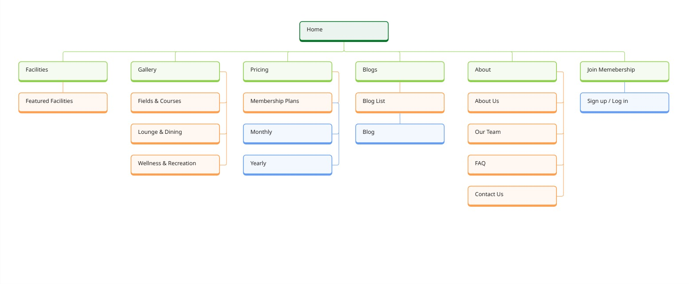
Primary User Flows
Home → About → Facilities → Membership (Compare Plans) → Contact / Apply → Confirmation
Home → Team → FAQ (Lesson Info) → Contact → Booking Form
Home → Gallery → Blog → Facility Details → Contact
3 - Design System Creation
Building on research insights, I designed the visual language for the website—including color palettes, typography, spacing, and interactive components. I created a scalable atomic design system with 40+ reusable components, ensuring consistency across pages and speeding up development.
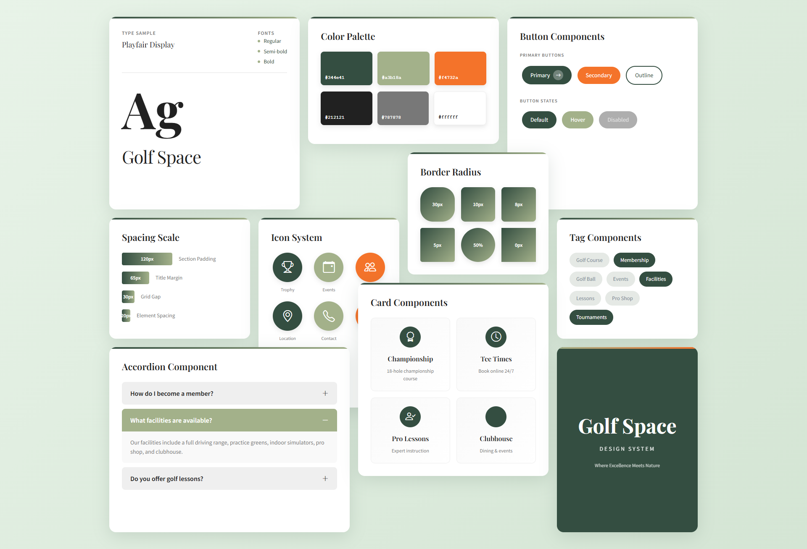
Key System Components:
- Color System: 3 primary colors + 6 neutral shades (WCAG 2.1/2.2 AA compliant)
- Typography: Playfair Display (headings) + Source Sans Pro (body)
- Spacing Scale: 8px base unit with 8 consistent spacing tokens
- Component Library: 40+ components (buttons, cards, forms, navigation)
- Design Principles: Natural elegance, accessibility-first, scalability
4 - Wireframes
I created low-fidelity wireframes to establish layout structure and content hierarchy across all key pages. Wireframes focused on information architecture, content placement, and user flow optimization before moving to high-fidelity design and front-end development.
Header Wireframe
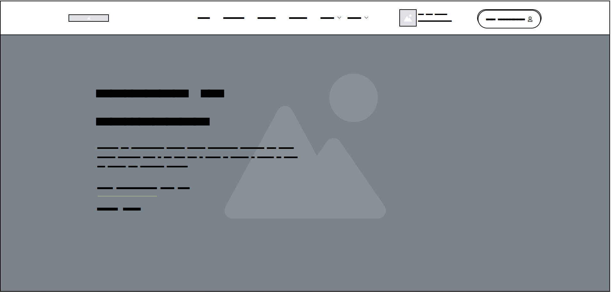
Footer Wireframe
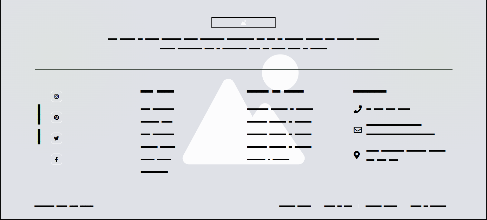
Page Wireframes
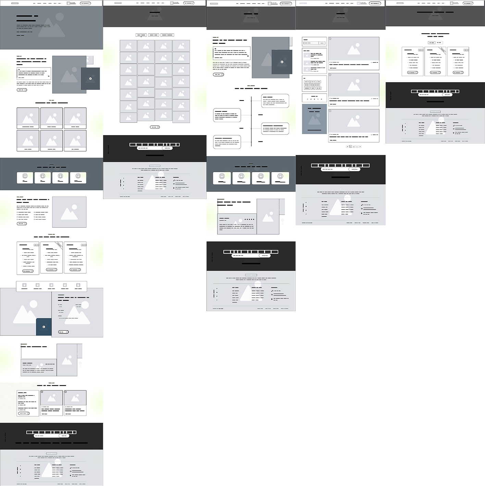
5 - Front-End Development & Cross-Device Testing
I implemented a fully responsive front-end using HTML5, CSS3, and Bootstrap 5, creating a semantic, performance-optimized component library. Animations were added using anime.js, and lazy loading was applied to improve page speed. Every interaction was tested to ensure cross-device compatibility and accessibility.
Final Screens: Homepage
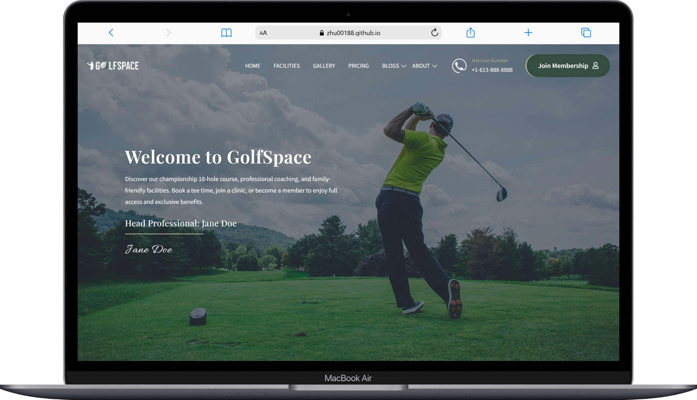
Fully responsive homepage featuring hero section, facility highlights, membership overview, and compelling CTAs
Final Screens: Navigation
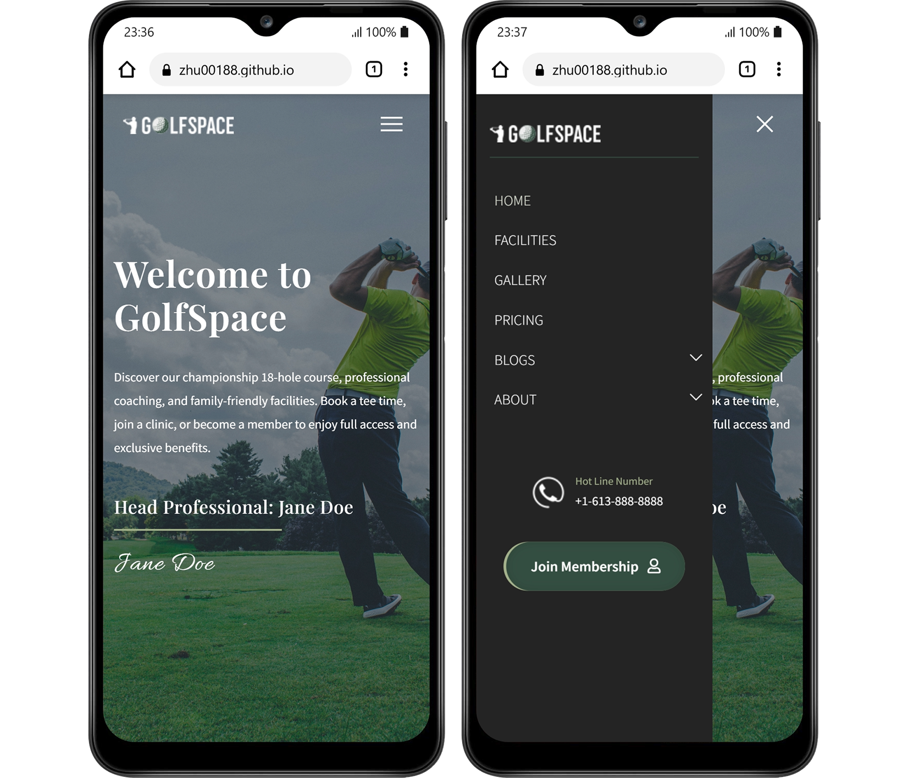
Sticky navigation with clear hierarchy, mobile hamburger menu, and accessible focus states
Final Screens: About Page
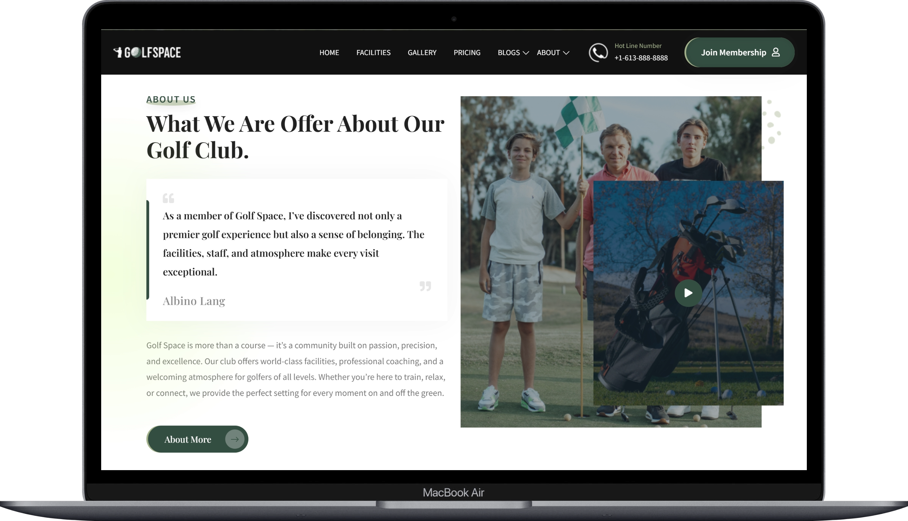
Engaging storytelling layout with mission statement, values, and club history presentation
Final Screens: Facilities Page
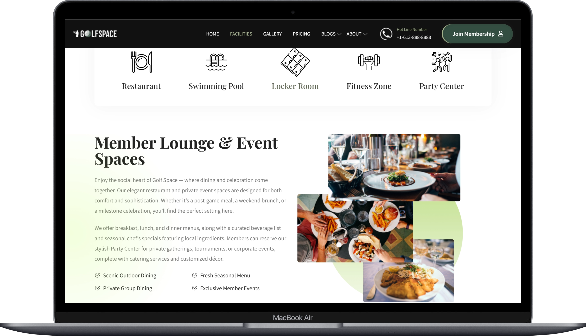
Visual showcase of premium amenities including driving range, practice greens, and clubhouse features
Final Screens: Pricing Page
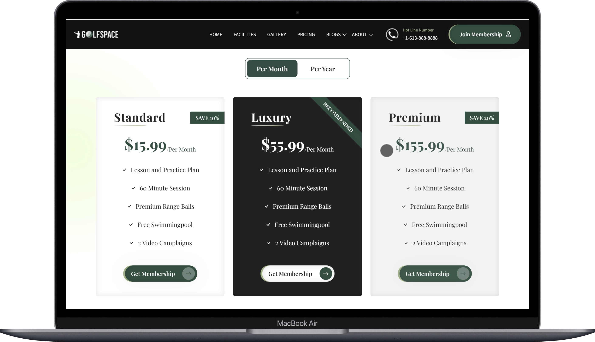
Clear pricing comparison table with membership tiers, benefits breakdown, and prominent CTAs
Final Screens: Photo Gallery
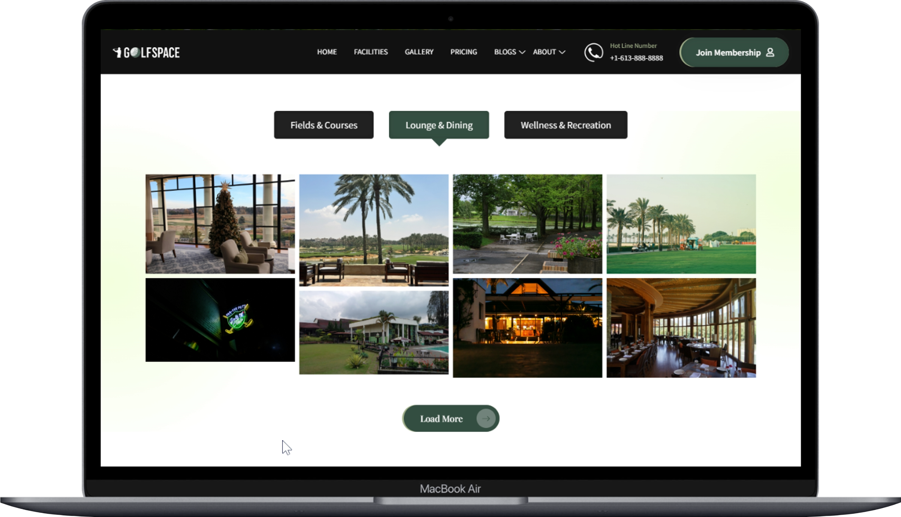
Masonry grid layout with lightbox functionality and category filtering for facility images
Final Screens: Blogs Page
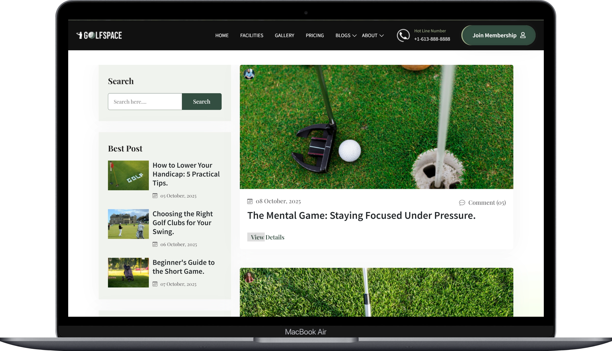
Blog listing with card-based layout, featured images, excerpts, and pagination
WCAG & AODA Compliance
Accessibility was prioritized from the start, not as an afterthought. Every design decision and code implementation was evaluated against WCAG 2.1/2.2 Level AA and AODA compliance standards. Achieved 97% Lighthouse Accessibility Score.
Google Lighthouse Audits | WCAG 2.1/2.2 & AODA Standards
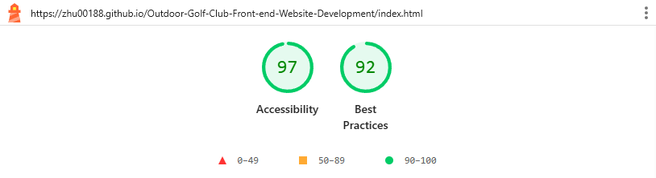
Google Lighthouse Audits
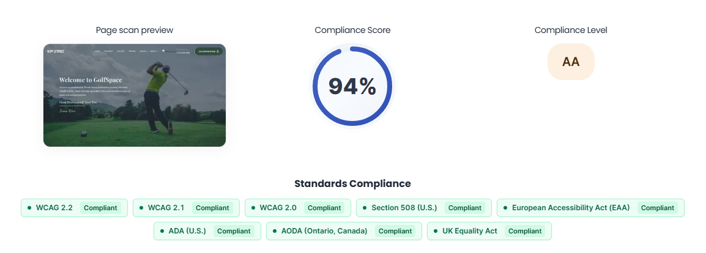
WCAG & AODA Compliant
Color Contrast
All text meets minimum 4.5:1 contrast ratio for normal text and 3:1 for large text.
- Primary (#344e41) on white: 10.2:1 (AAA)
- Body text (#212121) on white: 15.8:1 (AAA)
- Accent (#f4732a) on white: 4.8:1 (AA)
- Secondary (#a3b18a) on dark: 5.3:1 (AA)
Screen Reader Support
Comprehensive ARIA labels and semantic HTML for assistive technology compatibility.
- Semantic HTML5 elements (nav, main, footer)
- ARIA landmarks and live regions
- Alt text for all decorative and functional images
- Descriptive link and button labels
Responsive & Mobile
Touch-friendly targets (minimum 44x44px) and optimized mobile experience.
- All interactive elements meet 44x44px minimum
- Adequate spacing between clickable elements
- Responsive text sizing (16px minimum)
- Tested across iOS and Android devices
Content Readability
Clear typography hierarchy and readable font sizes optimized for all users.
- Base font size: 16px (body text)
- Line height: 1.6-1.8 for readability
- Clear visual hierarchy with heading levels
- Proper paragraph spacing and margins
Measurable Outcomes
Fully responsive pages
Reusable UI library
WCAG 2.1/2.2 standards
Responsive design
Google Lighthouse | AODA